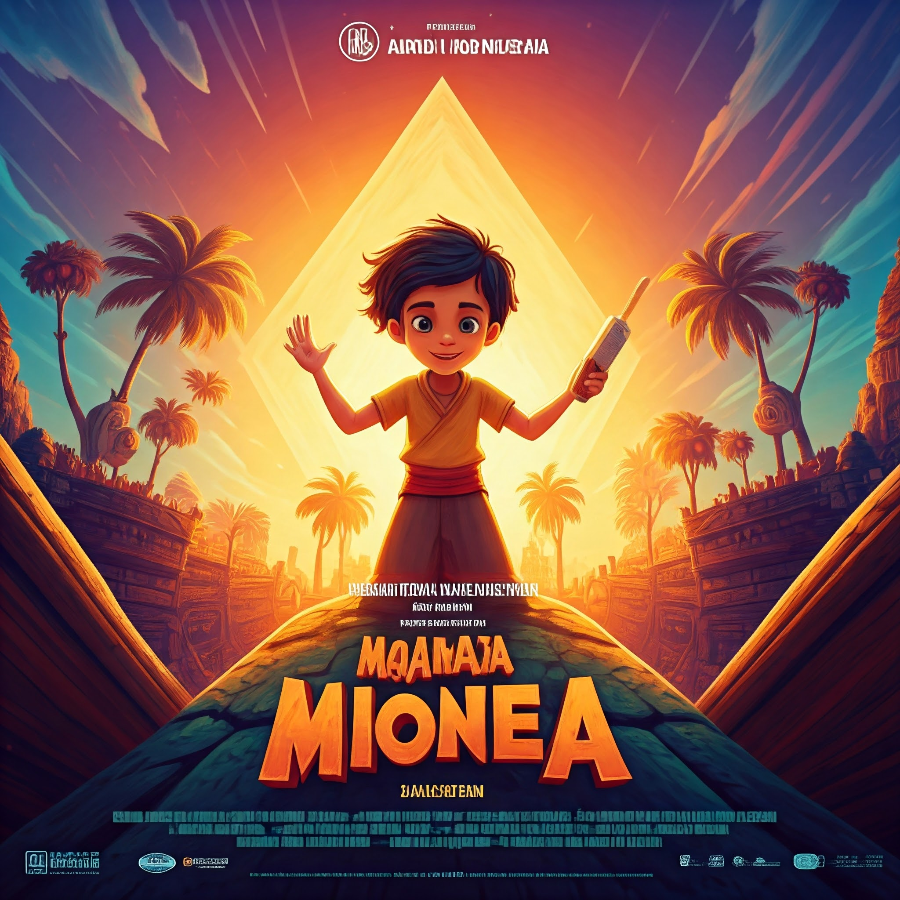

|  |  tanpa award.jpg) |
|
TEMPORAL ENIGMA |
MIONEA | EARBAIRE WAR |
| Dalam Earbaire War, dunia terancam oleh sebuah virus misterius yang menyebabkan manusia kehilangan kemampuan pendengarannya. Seorang ilmuwan muda berusaha mencari obat untuk menyembuhkan penyakit ini, namun ia dihadapkan pada konspirasi besar yang melibatkan sebuah organisasi rahasia yang ingin memanfaatkan situasi ini untuk menguasai dunia. |
MIONEA adalah kisah tentang sebuah desa kecil yang terpecah belah oleh konflik. Seorang anak kecil bernama MIONEA berusaha menyatukan kembali desanya dengan kekuatan persahabatan dan keberanian. |
Temporal Enigma adalah petualangan animasi epik yang membawa penonton ke dalam dunia di mana waktu bisa dimanipulasi. Seorang fotografer bernama Evan menemukan jam kuno milik kakeknya yang ternyata memiliki kekuatan untuk mengendalikan waktu. Dengan kekuatan baru ini, Evan harus menghadapi ancaman besar yang mengancam keberadaan alam semesta. Bersama teman-temannya, Evan menjelajahi dimensi waktu yang berbeda, menghadapi musuh-musuh yang licik, dan berusaha untuk memperbaiki kerusakan yang telah dilakukan |
 |
||
| HYPERDRIVE | 彼岸花の夢 (Higanbana no yume:Mimpi Bunga Lycoris) |
Paws of Hope |
| Alex, si mobil muda berbakat, bermimpi untuk menjuarai Grand Prix Hyperdrive. Ia bergabung dengan tim balap elit yang memiliki teknologi mobil balap paling mutakhir. Bersama rekan setimnya, Alex harus mengasah kemampuannya, mengatasi persaingan sengit, dan mengungkap konspirasi yang mengancam kejuaraan |
Seorang pemuda kaya bernama Neo menjalani hidup tanpa arah meski bergelimang harta, ia bertemu Aoi, seorang gadis sederhana namun penuh semangat.kecantikan alami dan kebijaksanaan Aoi menarik hati Neo, dan perlahan, cinta tumbuh di antara mereka.Namun, kebahagiaan mereka teruji saat Aoi mengungkapkan bahwa ia menderita penyakit yang membuat hidupnya tak akan lama lagi. Di hari-hari terakhirnya, Aoi sering mengajak Neo ke taman penuh bunga spider lily, bunga yang ia cintai. Ia bercerita bahwa dalam mitologi Jepang, spider lily melambangkan pertemuan dan perpisahan, serta menjadi penghubung antara dunia hidup dan mati
|
Di tengah hiruk-pikuk kota, Max, seekor golden retriever setia, kehilangan pemiliknya setelah kejadian tak terduga. Dengan hanya berbekal ingatan tentang tawa sang pemilik dan aroma familiar dari sebuah liontin di lehernya, Max memulai perjalanan penuh rintangan untuk kembali ke pelukan majikannya. Dalam perjalanannya, Max berteman dengan seekor tupai cerdik dan anak anjing liar yang ceria. Bersama-sama, mereka menghadapi tantangan di hutan gelap dan kota asing, menemukan arti persahabatan, keberanian, dan harapan. "Paws of Hope" adalah kisah penuh emosi yang akan menyentuh hati semua orang tentang cinta yang tak tergantikan antara manusia dan anjing. |
彼岸花の夢 (Higanbana no yume : Mimpi Bunga Lycoris) |
||
|
||
Keduanya perlahan jatuh cinta, tetapi kebahagiaan mereka dirusak oleh kenyataan pahit: Aoi menderita penyakit mematikan, dan waktunya di dunia ini tinggal sebentar lagi. Meski diliputi kesedihan, Neo berusaha membuat hari-hari terakhir Aoi penuh dengan cinta dan kebahagiaan. Mereka menghabiskan banyak waktu di taman spider lily, tempat Aoi bercerita tentang mitologi Jepang yang mengaitkan bunga itu dengan pertemuan, perpisahan, dan dunia roh. Ketika Aoi akhirnya pergi, Neo dihantui rasa kehilangan yang mendalam. Namun, setiap kali ia kembali ke taman spider lily, ia merasa Aoi masih ada di sana, seolah menjaga janji mereka untuk tetap saling mencintai di antara dunia yang berbeda.Taman itu menjadi saksi bisu cinta mereka, dan bunga spider lily yang bermekaran menjadi simbol pertemuan yang indah meski berakhir dalam perpisahan abadi. Neo menyadari bahwa cinta sejati tidak pernah benar-benar berakhir, meskipun hati tetap merasakan luka perpisahan yang tak terobati. |
||
 |
|
 |
 |
 |